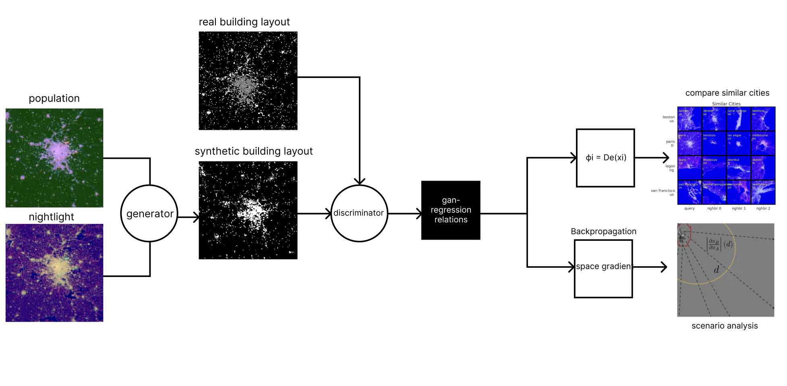

Hongqian Li
GAN Research
Gan in the architecture field right now is largely used to generate design perspectives/plans for community meetings for non-professional non-design community members. A few are Capturing different cities' street-level style/atmosphere/view as a whole and mixing different cities’ style/atmosphere/view. A few are also used as a machine learning model to predict urban development/traffic volume/… based on city’s stateline/network images.
In my opinion, there are some improvements/potential projects in this field:(1) improving the workflow of the generative design process by adding human interaction/intervention to generate content that has meanings. e.g. A Discussion on an Urban Layout Workflow Utilizing Generative Adversarial Network (GAN)
(2) Comparing similar places' atmosphere(styles/vibe) and its relations with other factors(demographic, noise, traffic…)e.g. Chinatown in different cities and see how the atmosphere(styles/vibe) differs and its relation to demographic and immigrant policy? OR similarly, comparing old and new, and see how the changes take place and the reason behind this… e.g. HORIZONS - Certain Measures [In]distinct Cities
(3) Prediction of urban development/traffic volume based on imagery data Right now I am leaning toward this direction. Because this may address potentially interesting problems. Conventional urban machine learning models often rely heavily on vast numerical datasets, such as demographic and economic figures. However, in certain regions, particularly in developing countries or the global south, there's a scarcity of such data for analysis. In such scenarios, the image-based methodology of Generative Adversarial Networks proves beneficial. It can efficiently process and leverage satellite or density imagery, datasets that are more readily available and widespread. e.g. Spatial sensitivity analysis for urban land use prediction with physics-constrained conditional generative adversarial networks
1 – CityGAN: Imagery-Driven Sensing on Urban Dynamics
What is your research question?
This research primarily focuses on the optimization of the predictive model on the spatial evolution of urban built environments and their intricate relationships on socio-economic factors.
The overwhelming impact of the built environment on a wide range of global issues such as climate change, energy use, and economic development and activity, is hard to overstate. As such, conventional models of the evolution of the spatial distribution of the urban built environment often rely heavily on vast numerical datasets, such as demographic and economic figures. However, in certain regions, particularly in developing countries or the global south, it is hard to find enough such data to even run the model, because their local governments simply can not afford to conduct vast detailed data collection.
To address this challenge, I aim to utilize the more globally-available remote-sensing imagery data and instead of parametric datasets and design a framework deploying generative adversarial networks (GANs), to estimate the spatial change and sensitivity of urban sprawl . Contrasted with traditional models, this image-centric approach could serve as a more practical and efficient alternative, especially in numeric data-deficient regions like developing countries. Furthermore, this project aims to shift attention to often-neglected urban areas in developing nations, offering a deep dive into rapid urbanization, societal inequities, and a series of related challenges.

Which computational tools and design methods will be best used to explore my idea?
I plan to choose to use urban analytics tools such as GIS, machine learning algorithms. For a specific model, I plan to use Generative Adversarial Networks(GANs) as it performs well in processing imagery data.
Which are precedents to my research project?
Traditional models for predicting urban growth fall into two categories: Agent-Based Modeling (ABM) and Complex Systems Modeling (CSM)[1]. Both have limitations in real-world decision-making. ABM relies on probabilities and needs a vast amount of data, like population density and land prices. Gathering this data is time-consuming, costly, and often outdated by the time it's collected. In places like Africa, where rapid urban growth is expected, such detailed data is scarce or non-existent. CSM, on the other hand, uses a physics-like approach. It's faster and simpler than ABM but fails to capture the intricate patterns of real cities[2]. Both models lack practicality, especially in data-scarce regions like Africa, and their low resolution makes them less useful for detailed planning.
Since 2014, Generative Adversarial Networks (GANs) have addressed challenges in fields like computer vision and speech synthesis. They've been effective in land use modeling, remote sensing, and climate modeling. Previous research demonstrated GANs' capability in generating realistic urban maps. The model we're introducing now builds on that, adding features like physical constraints and the ability to predict from socio-economic factors.
How my own project move the research question forward?
Many previous studies have primarily focused on developed countries and cities, yet there's a significant gap in research pertaining to cities in developing nations. This is especially concerning given their rapid development and the pressing need for in-depth analysis.
Research Method
So the basic workflow of this project would be these 4 steps:
Step 1: Gather satellite imagery data.
Input of the project is the satellite images of the cities. Mainly are two, one is Nightlight Image from VIIRS data as the proxy for economic activities intensity, Population Image from Landscan as the proxy for demographic/ human activities intensity. As for the cities I plan to investigate the rapidly developing cities in developing countries or the global south. Then gather the Building footprint image from SAR as the proxy for urban development.
Datasets:
Nightlight: Data-Visible Infrared Imaging Radiometer Suite (VIIRS)
Population: LandScan
Building Foortfornt: Synthetic Aperture Radar(SAR)

Step 2: Generate and establish relations between demographic and economic data with urban development. Put the population and nightlight image into the gan model the generator generates synthetic build layout image that is very close to the real building layout. Through this process, establish the image-based regression relationship between human and economic factors with urban development.
Step 3: Explore similarity between cities During the model training process, the Dexi index can be employed to identify similarities in the growth patterns of various cities. For instance, in a prior study, the model recognized coastal cities with intricate layouts as the most similar to San Francisco, while for Paris, it identified other cities with a circular configuration. This approach allows for the categorization of cities based on their developmental trajectory. By assessing the similarities between cities, researchers can gain deeper insights into the unique growth patterns and characteristics of different urban areas.
Step 4: Sensitive analysis and spillflow effect During the training phase, we can employ backpropagation to delve into how activities in one location can influence other areas and gauge the magnitude of this impact. This offers a deeper understanding of urban patterns and growth dynamics. In secondary urbanized regions, non-zero gradient values appear outside the computed gradient areas. This indicates that local changes in population density or brightness can propagate beyond their immediate vicinity. Such insights enable a better grasp of the spatial dependencies in the urbanization process and how alterations in one area can resonate in surrounding regions. Understanding this spatial propagation is paramount for urban planning and development. It equips decision-makers with the tools to anticipate and manage the repercussions of urban sprawl and urbanization.

Reference:
[1] M Batty. 2005. Cities and Complexity. Understanding Cities with Cellular Automata, Agent-Based Models, and Fractals. The MIT Press Cambridge, Massachusetts.
[2] Michael Batty and Paul A Longley. 1994. Fractal cities: a geometry of form and function. Academic Press.
[3] I. J. Goodfellow, J. Pouget-Abadie, M. Mirza, B. Xu, D. Warde-Farley, S. Ozair, A.
Courville, and Y. Bengio. 2014. Generative Adversarial Networks. ArXiv e-prints
(June 2014). arXiv:stat.ML/1406.2661
2 – Typeface City
Research Background: Typography, as an essential element of urban visual culture, plays a pivotal role in shaping the identity and ambiance of a city. In bustling metropolises like New York, where billboards and signs dominate the skyline, the choice of typeface can tell a story far beyond mere words. It can reflect the city's history, its cultural melting pot, and the socio-economic dynamics of its neighborhoods. This research aims to delve deep into the typographic landscape of New York, drawing correlations between typeface choices and the demographic fabric of the city.
Research Questions:
Mapping the typeface landscape of New York.
Explore the typeface with demographic data (ethnicity, income)
Research Value:
Dataset:
(1)Street-view Images
(2)Socio Data- Census
(3)Economic Data- Census
(4)Retail types
Method Sketch:
Precedents:
Senseable City Lab Typeface of London Typeface Reveals Spatial Economical Patterns
ethnicity linguistic landscape data | slab
FuturEats - ZY.ZHU